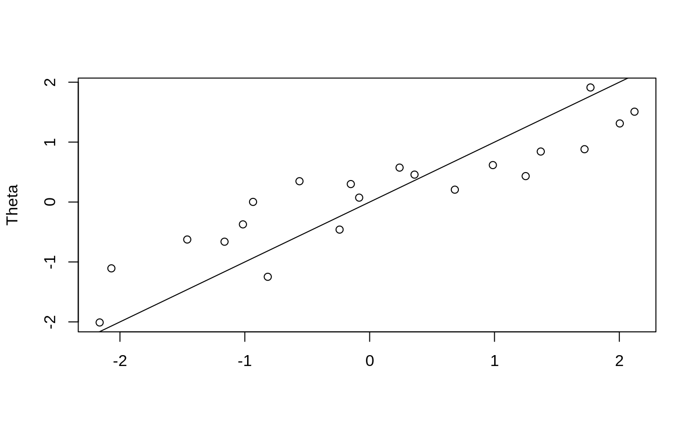

vignettes/hierarchical-bayes.Rmd
hierarchical-bayes.RmdSuppose that you have a dataset in which the observed process follows a normal distribution in the form of \(N(\mu_c, 1)\), this is, each observation follows a normal distribution with paramater \((\mu_c, 1)\), where \(\mu_c \sim N(\gamma, 1)\) and \(\gamma \sim \mbox{Unif}(-1,1)\). So for each class of observation, the mean was drawn from a normal distribution with unknown mean, and we assume the mean is within the [-1,1] range.
Let’s simulate some data with this features. For this example, we will fix gamma to be 0.3
The posterior probability in this case is
\[ P(\theta, \gamma | X) \approx P(X | \theta, \gamma)P(\theta|\gamma)P(\gamma) \]
lupost <- function(pars) {
sum(dnorm(X, pars[1:Nc], log = TRUE)) +
sum(dnorm(pars[1:Nc], pars[Nc + 1], log=TRUE)) +
dunif(pars[Nc + 1], -1, log=TRUE)
}In this case, we will be using an adaptive MCMC transition kernel. The adaptation will take place every 100 steps by computing the variance covariance matrix of the last 500 steps, and will start from the 2,000 step
library(fmcmc)
adaptk <- kernel_new(
proposal = function(env) {
if ((env$i > 2000) && !(env$i %% 100)) {
S <<- cov(env$ans[(env$i - 500):(env$i - 1), , drop=FALSE])*2.38^2/(Nc + 1)
}
env$theta0 + mvtnorm::rmvnorm(1, mean = Mu, sigma = S)
},
S = diag(Nc + 1),
Mu = rep(0, Nc + 1)
)